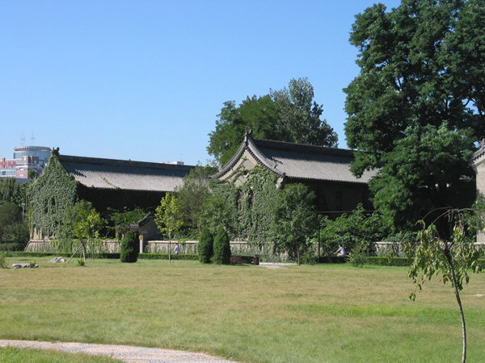
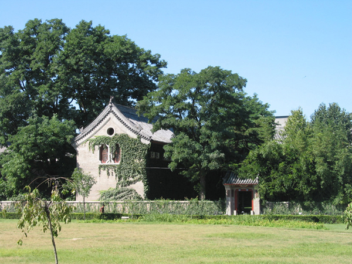
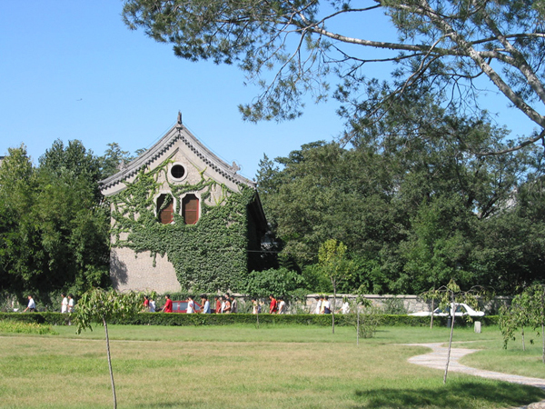
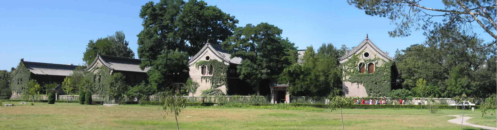

[要求]
在Photoshop 中打开“碎片1”、“碎片2”、“碎片3”和“效果图”图像，观察效果图，新建1800×450像素，RGB模式的图像。按照提示编辑图像，直至达到最终效果（将所有碎片拼接成一幅完整图像），务必将结果以psd格式保存。
[提示]
（1）将“碎片1”拖拽到新建图像中，命名新图层为“碎片1”，调整位置，使其位于图像最左边。
（2）将“碎片2”拖拽到新建图像中，命名新图层为“碎片2”，将“碎片2”层的不透明度改为50%，用移动工具移动“碎片2”层，使其尽量与“碎片1”中的景物吻合。
（3）在“碎片2”层上建立图层蒙版，在两个图层的重叠部分拖拽出黑白线性渐变。
（4）将“碎片2”层的不透明度改为100%，用黑色画笔在图层蒙版上修饰图像，去掉树的重影。
（5）将“碎片3”拖拽到新建图像中，命名新图层为“碎片3”。用以上的方法将“碎片3”和“碎片2”拼接好。
（6）利用“曲线”命令将“碎片2”中的天空亮部曲线稍微向下压一点，使天空颜色与另外两层一致。
（7）使用裁切工具将整幅图像裁切整齐。
（8）将图像以psd格式保存。
素材：
碎片1
碎片2
碎片3
效果图
